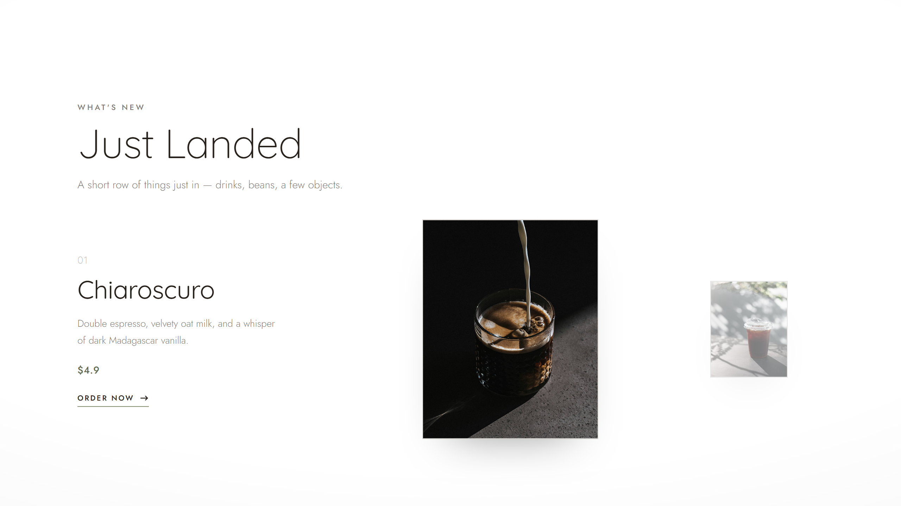
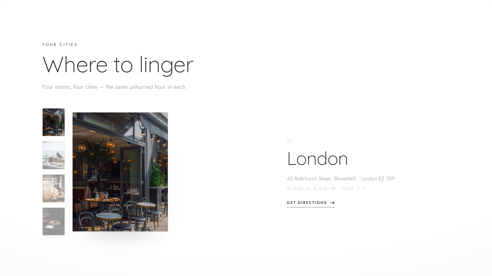
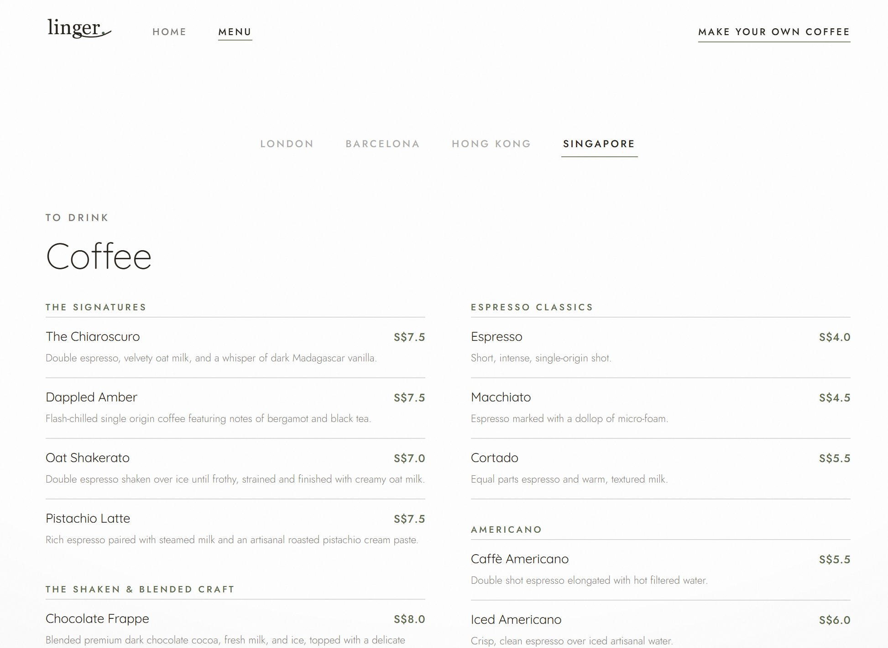
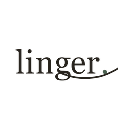

Most café websites shout — hero slogans, bright buttons, a wall of food photos. Linger does the opposite. The site is art-directed like a print magazine, where empty space is the design and atmosphere does the selling.
The brand promise is time: slow coffee and unhurried hours. The interface had to embody that — slow transitions, generous whitespace, a quiet voice — so the medium is the message.
Restraint
If a section feels empty, it's correct. Resist filling it.
Minimal
One statement per view; hierarchy comes from space, not from competing type.
Control
Nothing is accidental. Every margin, weight and easing curve is deliberate.
Before a single product is shown, the site has to feel like somewhere quiet — the digital equivalent of a well-lit corner table on a slow morning. Four qualities hold that feeling in place.
Air around everything. The eye is never crowded.
Palette and grain keep it human — quiet luxury, never clinical.
Motion settles like steam; nothing snaps or bounces.
A constant paper grain makes the screen feel like a page.
The hero at the very top of this page, then Just Landed — a two-product spread where one click swaps image, copy and emphasis in one synchronised move — and finally the Atlas: a single plate that cross-fades through the four cities, each with a real coordinate. The two movements are below.

A two-product editorial swap — the active drink centred, the other a desaturated thumbnail.

The Atlas — one plate cross-fades through London, Barcelona, Hong Kong and Singapore, each with a live coordinate.

Menu — one broadsheet, reconfigured by city.
A clean, single-column walk through Grind → Pull → Steam → Pour. It proves the brand can be warm and human, not only elegant. Go ahead — make a cup.
The Bench — playable, right here. Open full-screen ↗
A near-monochrome warm-neutral scheme; two geometric faces; a single sage accent; the tooth of paper over everything.
Warm greys plus a single muted sage read as organic and calm — coffee, linen, olive. Secondary tones are rgba tints of the one ink, so the palette never feels designed by committee. Black is softened to espresso so nothing reads as harsh.
The luxury is the range: huge, airy, light display set against tiny, tightly-tracked uppercase labels. Tracking goes negative on big type to feel set, positive on small labels to feel engraved. Prices use tabular figures so digits align like a printed bill.
A fixed full-page grain and a whisper vignette sit over everything like paper tooth — both fixed, so they stay still as content scrolls beneath, exactly like ink on paper.

Killed the "brand story" page
For a truly minimal brand the story is carried by voice, photography and atmosphere. Two pages of menu + home say more by saying less.
One menu, four cafés
A single broadsheet reconfigures by branch — currency and availability shift on selection. Less to maintain, more delightful to use.
Removed a "nice" animation
The hero once eased in with a 3.5% scale; on every refresh it read as a load glitch. Cutting it made the page feel solid — the most considered motion is sometimes none.
Stay a while.